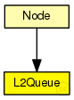
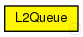

This documentation is released under the Creative Commons license
This documentation is released under the Creative Commons licenseRepresents the network interface for a point-to-point connection.
Packets arriving from the upper layer ("in" gate) are sent out on the "line" gate, which is expected to be connected to a link with nonzero data rate. Packets that arrive while a previous packet is being transmitted are queued up. The maximum queue size in packets can be specified in a parameter. Excess frames are simply discarded and recorded as statistics.
The model can be easily extended in several ways: to make it possible to query the queue length from another module via a direct method call interface, to implement priority queueing, or to collect link statistics (utilization, etc.)
The following diagram shows usage relationships between types. Unresolved types are missing from the diagram.
The following diagram shows inheritance relationships for this type. Unresolved types are missing from the diagram.
| Name | Type | Description |
|---|---|---|
| Node | compound module |
| Name | Type | Default value | Description |
|---|---|---|---|
| frameCapacity | int | 0 |
max number of packets; 0 means no limit |
| Name | Value | Description |
|---|---|---|
| display | i=block/queue;q=queue |
| Name | Direction | Size | Description |
|---|---|---|---|
| in | input | ||
| out | output | ||
| line | inout |
// // Represents the network interface for a point-to-point connection. // // Packets arriving from the upper layer ("in" gate) are sent out on // the "line" gate, which is expected to be connected to a link with // nonzero data rate. Packets that arrive while a previous packet is // being transmitted are queued up. The maximum queue size in packets // can be specified in a parameter. Excess frames are simply discarded // and recorded as statistics. // // The model can be easily extended in several ways: to make it possible to // query the queue length from another module via a direct method call // interface, to implement priority queueing, or to collect link statistics // (utilization, etc.) // simple L2Queue { parameters: int frameCapacity = default(0); // max number of packets; 0 means no limit @display("i=block/queue;q=queue"); gates: input in; output out; inout line; }
This documentation is released under the Creative Commons license